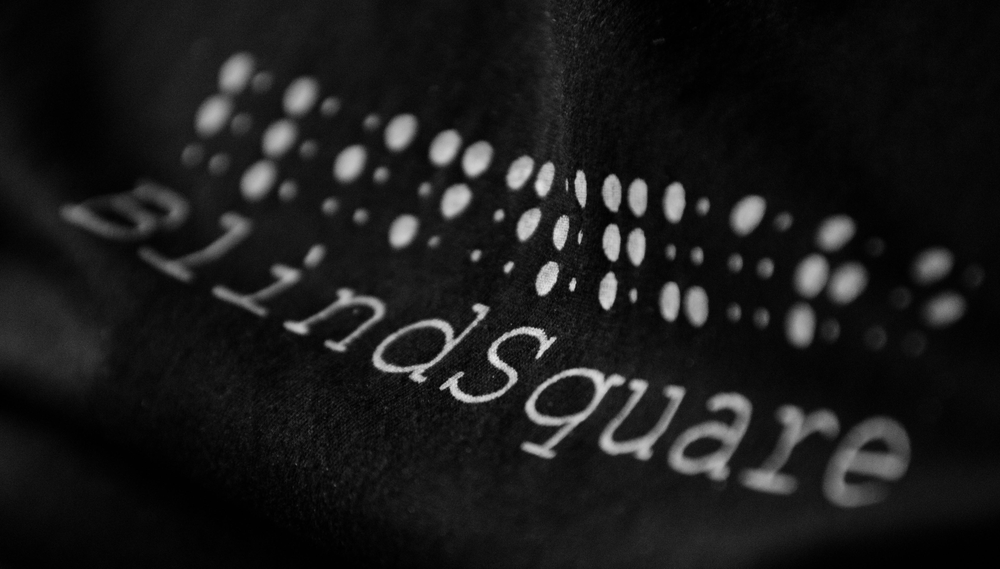
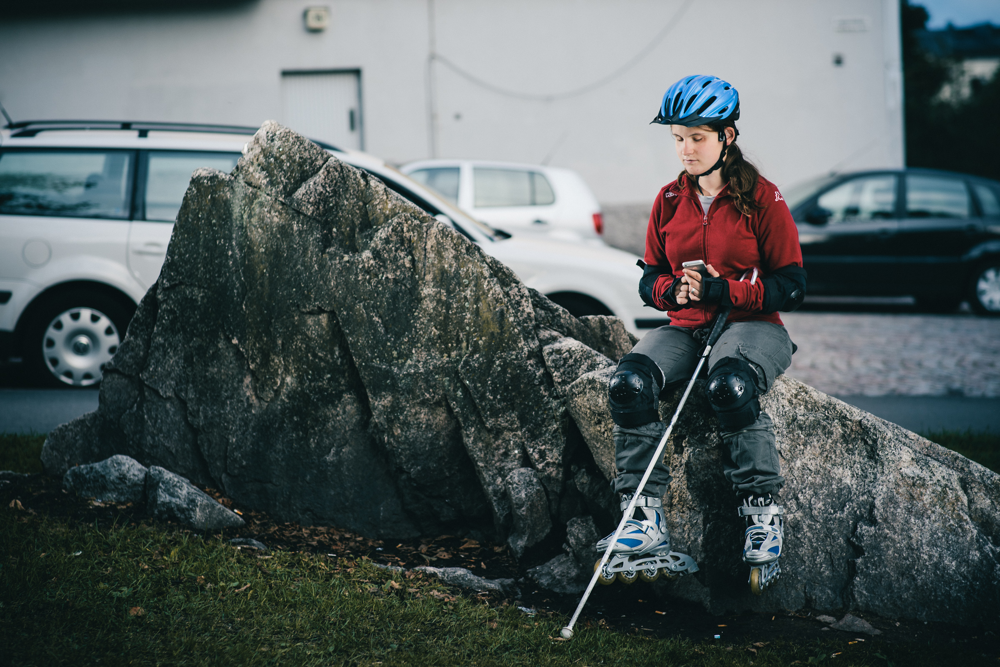

Selbstständige Fortbewegung
Für Blinde und sehbehinderte Menschen
blindsquare.com
Eine selbstständige Fortbewegung in einer fremden Großstadt (z.B. auf Reisen) ist für blinde und sehbehinderte Menschen schwierig oder sogar unmöglich. Neue Cafés, Bibliotheken oder ein empfehlenswertes Restaurant in einem neuen Viertel zu entdecken ist für sie allein oft nicht möglich. Unterstützung bei der räumlichen Orientierung, Informationen zu interessanten Orten und öffentlichen Verkehrsmitteln, sowie die hörgerechte Aufbereitung all dieser Hinweise fehlen oft.
Was ist das beliebteste Café in 200 Meter Umgebung? BlindSquare aus Finnland hat die Antwort! Sie ist die beliebteste GPS-App der Welt für blinde und sehbehinderte Menschen. BlindSquare beschreibt ihnen die Umgebung und sagt Straßenkreuzungen und wichtige Punkte an während sie sich fortbewegen. In Verbindung mit kostenlosen Navigations-Apps wie Open Street Map und dem ortsbasierten sozialen Netzwerk Foursquare bietet BlindSquare fast alle Informationen, die blinde und sehbehinderte Menschen benötigen, um unterwegs unabhängig zu sein. Ihre Sicherheit hat dabei höchste Priorität. BlindSquare hat eine eigene Sprachausgabe und sagt öffentliche Punkte (POI – points of interest), Kreuzungen und vom Nutzer gespeicherte Punkte mit einer eigenen Stimme an. Auf die wichtigsten Funktionen von BlindSquare kann über das Audiomenü mit jedem Headset zugegriffen werden, das Apples Musikwiedergabesteuerung unterstützt.
BlindSquare ist für iPhone und iPad im App Store erhältlich. In über 22 Sprachen ist die App verfügbar, u.a. auf Deutsch, Englisch, Französisch, Arabisch und Finnisch. Und überall dort auf der Welt, wo die App auf Einträge bei Foursquare und Kartenmaterial von Open Street Map zurückgreifen kann, ist sie verwendbar. Durch die Unterstützung von Braillezeilen kann BlindSquare auch von taubblinden Menschen genutzt werden.
 BlindSquare nutzt die Daten des ortsbasierten sozialen Netzwerks Foursquare. Seine Mitglieder können mit ihren Smartphones oder Computern an Orten einchecken und ihren Freunden dadurch mitteilen, wo sie sich gerade befinden. Möchte ein Nutzer an einem Ort einchecken, der noch nicht auf Foursquare existiert, kann er diesen auf der Foursquare-Seite eintragen. Dadurch hat Foursquare eine große Menge an Punkten gesammelt, auf die auch andere Apps wie BlindSquare zugreifen können. BlindSquare nutzt diese Daten, um anhand von Algorithmen seinen Nutzern die wichtigsten Informationen über Ihre Umgebung mitzuteilen. Darüber hinaus verwendet BlindSquare das kostenlose, offene Kartenmaterial von Open Street Map. Das Prinzip von Open Street Map ist dabei ähnlich wie bei Wikipedia. Freiwillige zeichnen mithilfe von GPS-Geräten Geo-Koordinaten auf und laden diese Daten bei Open Street Map hoch. BlindSquare nutzt Open Street Map für Daten zu Straßen, Wegen, Autobahnen, Kreuzungen usw. sowie für die Navigation seiner Nutzer.
Jeder Blinde oder Sehbehinderte weltweit, der sich unabhängiger fortbewegen bzw. reisen möchte und dabei viel Wert auf eine sichere Navigation, wertvolle Umweltinformationen und einfache Bedienung legt. BlindSquare leistet damit auch einen wichtigen Beitrag zur gesellschaftlichen Inklusion, sowie zur Selbstbestimmung und Teilhabe blinder und sehbehinderter Menschen.
Unter anderem hat BlindSquare auf dem World Congress 2013 den World Summit Award in der Kategorie Inklusion gewonnen. Die Jury schreibt über BlindSquare:
„In the category e-Inclusion and Empowerment, the product stands out in the use of GPS, speech technology, open data as well as user-friendliness. The use of open data and crowd sourced information opens new opportunities for applications in e-inclusion and empowerment.“
(World Summit Award Jury, Evaluation Online)
Diese Informationen zeigt Blindsquare über Orte an, soweit diese auf Foursquare eingetragen sind:
- Adresse,
- Telefonnummer (ein Doppeltippen löst einen Anruf aus),
- Ort auf Twitter,
- Internetseite des Ortes (wird im Browser geöffnet),
- Speisekarte, sofern es ein Restaurant ist,
- Richtung und Entfernung.
Sarah aus Oldenburg ist seit ihrer Geburt blind. In ihrer Heimatstadt kann sie sich recht eigenständig bewegen; Geräusche, Orte und Entfernungen sind ihr vertraut. Sie weiß, wo der beste Bäcker ist, wo sie einen guten Kaffee trinken kann, und wie weit es von dort bis zur nächsten Bushaltestelle ist. Sobald sie dieses gewohnte Umfeld verlassen will, ist sie, obwohl sie einen Blindenhund hat, allerdings auf die Hilfe und Unterstützung von Familie und Freunden angewiesen. Zu gerne würde sie sich einmal auf eigene Faust auf den Weg machen, um zum Beispiel am Wochenende mit dem Regionalzug nach Wilhelmshaven an die Nordsee zu fahren. Dann würde sie sich die Meeresluft um die Nase wehen lassen und gemütlich in einem Café ein Stück Friesentorte essen. Einen neuen Ort auf eigene Faust entdecken zu können, das wäre ein Stück Freiheit für Sarah. Aber sie weiß, dass die Unsicherheiten bei so einer Unternehmung für sie alleine viel zu groß sind. Woher wüsste sie schon, von wo die Busse fahren, und welche Orte überhaupt interessant und beliebt sind?
 Eine Freundin erzählt Sarah von einem Beitrag über die App BlindSquare. Im Internet liest sie, dass diese App sehbehinderten und blinden Menschen die Orientierung in einer unbekannten Umgebung ermöglicht und dafür auf offenes Kartenmaterial von Open Street Map und das soziale Netzwerk Foursquare zurückgreift. Informationen zu der Umgebung sagt die App durch eine eigene Sprachausgabe an und verfolgt den aktuellen Standort über das GPS-Signal des Geräts. Sarah ist neugierig geworden und findet die App im iTunes Store. Von dort lädt sie sie sich auf ihr Tablet herunter, um sie am Nachmittag gleich auszuprobieren. Da sie sich in Oldenburg sehr gut auskennt, kann sie hier die App hervorragend testen. Sie lässt sich sogar mit ihren Bluetooth-Köpfhörern bedienen, sodass sie das Tablet in ihrer Handtasche verstauen kann und die Hände frei hat, z.B. für ihren Blindenhund oder einen Blindenstock. Von BlindSquare kann sie sich ihren aktuellen Standort, die nächstgelegene Kreuzung und öffentliche Orte in ihrer Umgebung ansagen lassen. Über die Verknüpfung mit Foursquare kann Sarah nach beliebten Cafés, Bibliotheken oder der nächsten Post suchen. Zu den Orten erhält sie Informationen wie Bewertungen von Foursquare-Nutzern, Entfernung und Navigation. Sarah lässt sich versuchsweise den Weg zur nächsten Sparkasse erklären und ist erstaunt, wie gut die App Verkehrsknotenpunkte erkennt und welche umfangreichen Informationen sie über Oldenburg auf dem Weg bereithält. Richtung und Entfernung werden regelmäßig angesagt, während sie sich auf den Zielort zu bewegt.
 In der gewohnten Umgebung lernt Sarah schnell, wie BlindSquare funktioniert und freut sich über die Verknüpfung
mit den sozialen Netzwerken Foursquare, Twitter und Facebook, wo sie ihren Standort mit Freunden teilen kann. Über
die App kann sie ihren Standort z.B. auch als Favorit markieren. Wenn sie sich dann die angesagten Informationen
filtern lässt, kann sie sich beispielsweise nur Kreuzungen und gespeicherte Orte ansagen lassen. So wird sie nicht
von einer Informationsflut überrollt. Zurück zuhause kann sie auf die gespeicherten Orte und Favoriten auch von
ihrem Laptop aus zugreifen, denn BlindSquare speichert Orte und Favoriten in der iCloud und synchronisiert diese
zwischen allen Geräten. Sarah ist begeistert, die Verbindung von exakter Navigation und der Möglichkeit zur sozialen
Interaktion mit ihren Freunden gefällt ihr sehr. Die umfangreichen Informationsmöglichkeiten unterwegs machen sie
unabhängiger und selbstständiger. So steht auch ihrem Ausflug nach Wilhelmshaven an die Nordsee bald nichts mehr im
Weg.
In der gewohnten Umgebung lernt Sarah schnell, wie BlindSquare funktioniert und freut sich über die Verknüpfung
mit den sozialen Netzwerken Foursquare, Twitter und Facebook, wo sie ihren Standort mit Freunden teilen kann. Über
die App kann sie ihren Standort z.B. auch als Favorit markieren. Wenn sie sich dann die angesagten Informationen
filtern lässt, kann sie sich beispielsweise nur Kreuzungen und gespeicherte Orte ansagen lassen. So wird sie nicht
von einer Informationsflut überrollt. Zurück zuhause kann sie auf die gespeicherten Orte und Favoriten auch von
ihrem Laptop aus zugreifen, denn BlindSquare speichert Orte und Favoriten in der iCloud und synchronisiert diese
zwischen allen Geräten. Sarah ist begeistert, die Verbindung von exakter Navigation und der Möglichkeit zur sozialen
Interaktion mit ihren Freunden gefällt ihr sehr. Die umfangreichen Informationsmöglichkeiten unterwegs machen sie
unabhängiger und selbstständiger. So steht auch ihrem Ausflug nach Wilhelmshaven an die Nordsee bald nichts mehr im
Weg.
Offizielle Webseite:
www.blindsquare.com
World Summit Award Jury Evaluation:
http://www.wsis-award.org/winner/blindsquare-110420130906
User Guide:
http://blindsquare.com/userguide/